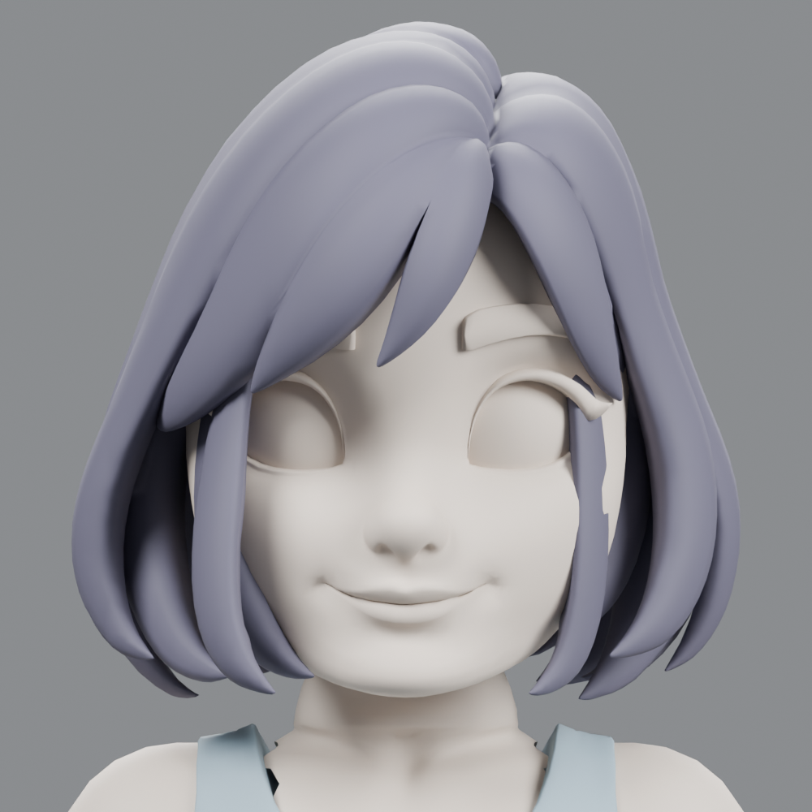
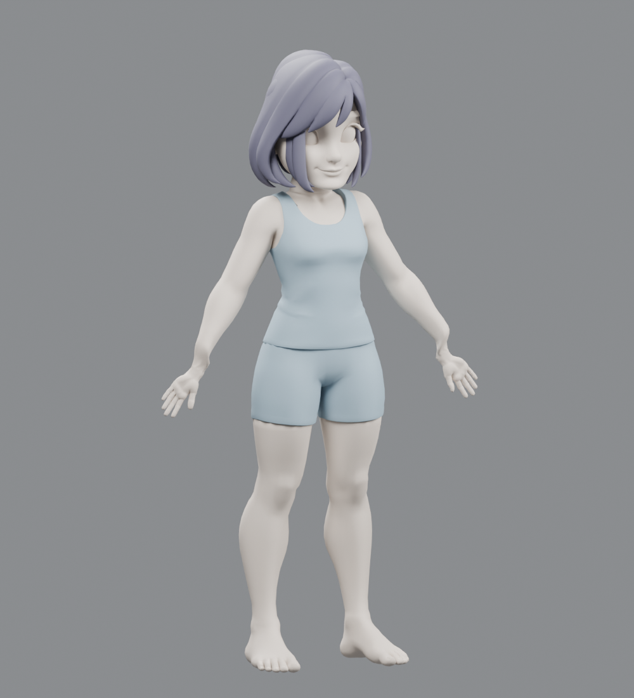
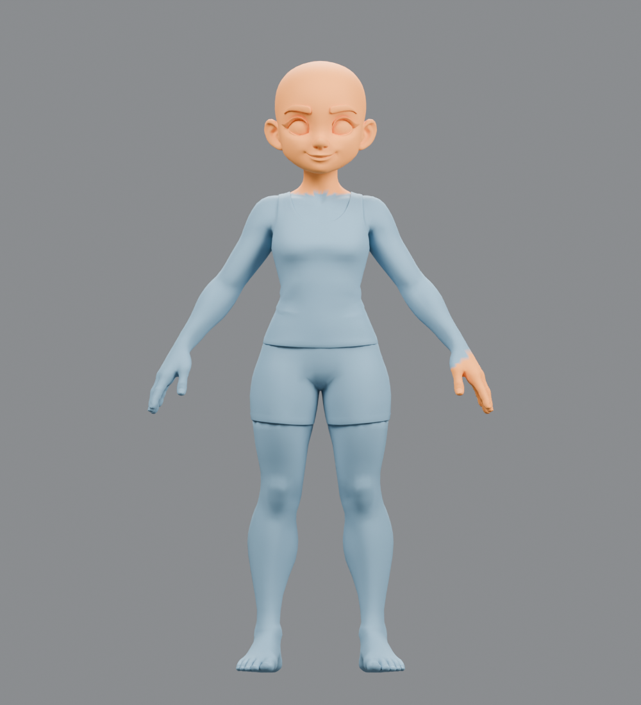
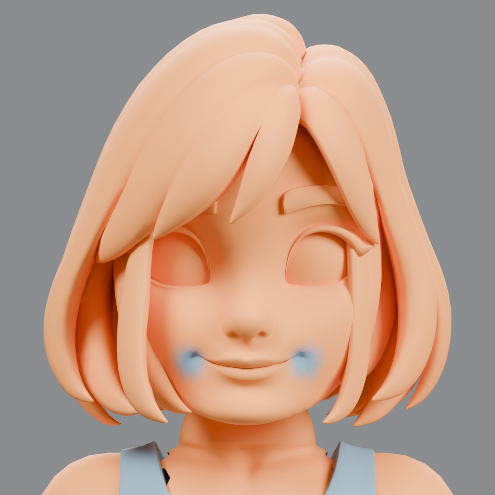
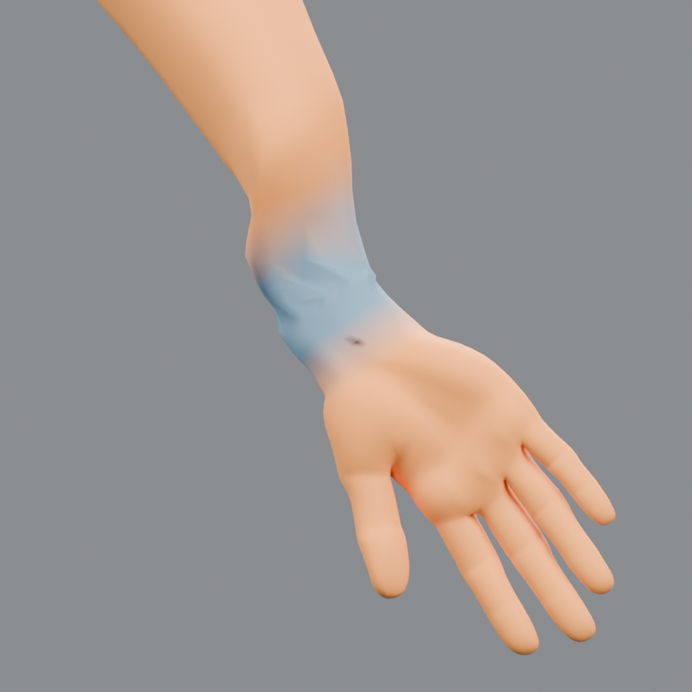

얼굴 · 입꼬리 국소 Smooth

수정 후수정 전2026-10-04 · Blender 4.5.3 · Tripo P2 생성 원본 보존 · 스컬프 단계 검토
위치 조정만 한 결과가 아닙니다. Blender의 실제 Mask Slice와 Sculpt 브러시를 실행했습니다. 원본 P2 FBX는 보존했고, 별도 복사본에서 작업했습니다. 아래는 실제 .blend 렌더이며 AI가 그린 완성 예상도가 아닙니다. UV·텍스처·리깅 이전의 검토 후보입니다.
전신을 1.7m 기준으로 맞추고 머리·손을 교체했습니다. 눈·눈썹 등은 머리 객체 안의 별도 메시 섬으로 보존했으며 아직 개별 객체 분류 전입니다. 머리카락·의복은 별도 객체와 컬렉션으로 유지했습니다. 반대쪽 팔·손과 다리는 Y축 Mirror로 동일하게 생성합니다. 머리카락의 열린 틈에는 두상의 윗부분에서 파생한 독립 두피 덮개를 추가했고, 모발 가닥과 같은 구분용 재질을 배정했습니다. 색은 구분용 재질이며 최종 텍스처가 아닙니다.

두 상태 모두 절단·접합·크기 맞춤까지 수행한 동일 후보입니다. 슬라이더는 그 뒤 실제 브러시 작업만 비교합니다. 머리카락의 상단 후면에는 두피 간섭을 줄이기 위한 Grab을 적용했습니다.
이 렌더는 .blend에 저장된 실제 정점 마스크 속성을 색으로 표시한 진단 화면입니다. Blender UI 캡처는 아닙니다. 절단 화면의 주황색은 제거할 영역, 브러시 화면의 주황색은 보호한 영역입니다. 브러시 화면의 푸른 부분은 선택한 스컬프 객체에서 수정을 허용한 영역입니다. 다른 독립 객체는 해당 스트로크에 포함되지 않습니다.



Mask Slice로 원본 머리·손과 교체 파츠의 접합 경계를 다듬었습니다. 경계의 타원 단면과 주변 밴드를 맞춘 뒤 쿼드/삼각형 면을 연결했습니다. 이 접합 맞춤은 Blender Python 메시 편집이며, 이후의 Smooth·Inflate/Deflate·Grab은 native Sculpt 브러시입니다. 전체 리메시는 수행하지 않았습니다.
| 접합 | 두 경계 엣지 수 | 생성 면 | 접합에 남은 열린 엣지 |
|---|---|---|---|
| Head_and_Neck_P2 | [48, 30] | 48 | 0 |
| Arm_Hand_PosY_P2 | [44, 42] | 44 | 0 |
| 객체 | 브러시 | 수정 목적 | 변경 정점 수 | 스트로크 최대 이동 | 완전 보호 정점 최대 이동 |
|---|---|---|---|---|---|
| Head_and_Neck_P2 | Smooth | neck seam local smooth | 105 | 3.028 mm | 0.000000 mm |
| Head_and_Neck_P2 | Smooth | neck seam local smooth | 25 | 2.668 mm | 0.000000 mm |
| Head_and_Neck_P2 | Smooth | neck seam local smooth | 61 | 5.495 mm | 0.000000 mm |
| Head_and_Neck_P2 | Smooth | neck seam local smooth | 60 | 5.453 mm | 0.000000 mm |
| Head_and_Neck_P2 | Smooth | circumferential neck transition smooth | 176 | 4.607 mm | 0.000000 mm |
| Head_and_Neck_P2 | Smooth | circumferential neck transition smooth | 146 | 5.969 mm | 0.000000 mm |
| Head_and_Neck_P2 | Smooth | circumferential neck transition smooth | 102 | 6.058 mm | 0.000000 mm |
| Head_and_Neck_P2 | Smooth | circumferential neck transition smooth | 66 | 4.965 mm | 0.000000 mm |
| Head_and_Neck_P2 | Smooth | circumferential neck transition smooth | 47 | 3.910 mm | 0.000000 mm |
| Head_and_Neck_P2 | Smooth | circumferential neck transition smooth | 67 | 5.419 mm | 0.000000 mm |
| Head_and_Neck_P2 | Smooth | circumferential neck transition smooth | 102 | 5.971 mm | 0.000000 mm |
| Head_and_Neck_P2 | Smooth | circumferential neck transition smooth | 150 | 4.807 mm | 0.000000 mm |
| Head_and_Neck_P2 | Smooth | circumferential neck transition smooth | 176 | 2.160 mm | 0.000000 mm |
| Head_and_Neck_P2 | Smooth | circumferential neck transition smooth | 148 | 2.205 mm | 0.000000 mm |
| Head_and_Neck_P2 | Smooth | circumferential neck transition smooth | 112 | 1.954 mm | 0.000000 mm |
| Head_and_Neck_P2 | Smooth | circumferential neck transition smooth | 66 | 2.295 mm | 0.000000 mm |
| Head_and_Neck_P2 | Smooth | circumferential neck transition smooth | 49 | 2.224 mm | 0.000000 mm |
| Head_and_Neck_P2 | Smooth | circumferential neck transition smooth | 67 | 3.565 mm | 0.000000 mm |
| Head_and_Neck_P2 | Smooth | circumferential neck transition smooth | 107 | 2.723 mm | 0.000000 mm |
| Head_and_Neck_P2 | Smooth | circumferential neck transition smooth | 152 | 2.324 mm | 0.000000 mm |
| Head_and_Neck_P2 | Smooth | mouth corner pinching cleanup | 98 | 0.417 mm | 0.000000 mm |
| Head_and_Neck_P2 | Smooth | mouth corner pinching cleanup | 98 | 0.337 mm | 0.000000 mm |
| Head_and_Neck_P2 | Smooth | mouth corner pinching cleanup | 98 | 0.389 mm | 0.000000 mm |
| Head_and_Neck_P2 | Smooth | mouth corner pinching cleanup | 98 | 0.320 mm | 0.000000 mm |
| Arm_Hand_PosY_P2 | Inflate/Deflate | wrist transition subtle volume | 103 | 0.035 mm | 0.000000 mm |
| Arm_Hand_PosY_P2 | Smooth | wrist bridge local smooth | 337 | 0.991 mm | 0.000000 mm |
| Arm_Hand_PosY_P2 | Inflate/Deflate | wrist transition subtle volume | 128 | 0.035 mm | 0.000000 mm |
| Arm_Hand_PosY_P2 | Smooth | wrist bridge local smooth | 343 | 1.228 mm | 0.000000 mm |
| Head_and_Neck_P2 | Grab | lower neck silhouette 1.5mm grab | 29 | 0.360 mm | 0.000000 mm |
| Hair_P2_Independent | Grab | upper rear hair cap fit to scalp | 337 | 35.497 mm | 0.000000 mm |
| Hair_P2_Independent | Grab | upper rear hair cap fit to scalp | 357 | 35.497 mm | 0.000000 mm |
기계 판독 작업 기록 · 저장 파일의 실제 정점 비교 검증 · 브러시 전 Blender · 절단 마스크 Blender · 얼굴 마스크 Blender · 손목 마스크 Blender
공식 구현 근거: Blender Sculpt Operators. 강의 자료를 그대로 재게시하지 않고 작업 결과와 프로젝트 적용 내용을 기록했습니다.